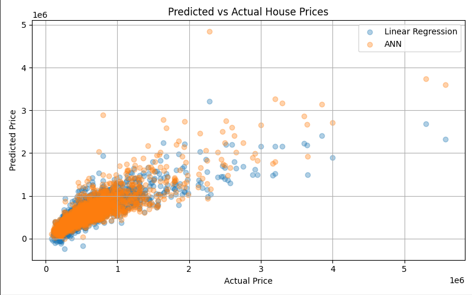
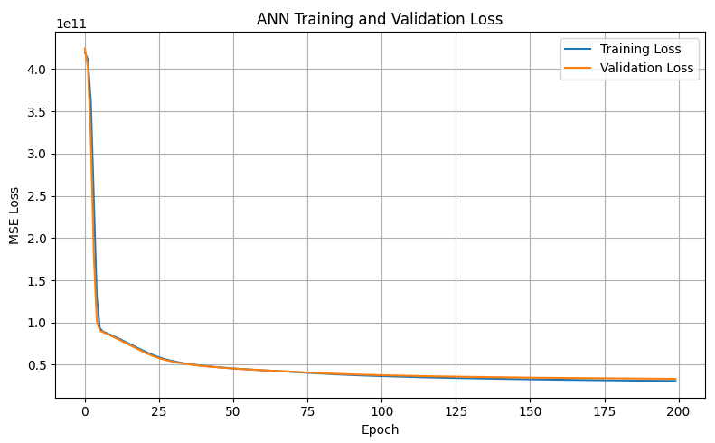

Predictive Analytics & Exploratory Data Analysis
Housing Price Modeling Project · ENGG*4430 · Three-person team
Comparing linear regression and a neural network on approximately 21,600 King County house sales, with feature engineering and error analysis.
- Python
- pandas
- scikit-learn
- TensorFlow / Keras
- EDA
- Feature engineering
- Model evaluation
The question
Could a neural network improve on linear regression when estimating a home’s sale price from its structural and location features? Our team used approximately 21,600 King County transactions from 2014–2015 to compare three regression models.
My work in the project
- Worked on data preparation and exploratory analysis in Python, including feature distributions and relationships.
- Prepared features and compared linear regression with an artificial neural network.
- Interpreted MAE, RMSE, and R² alongside prediction and training plots to understand model performance.
How the models were built
The full feature set combined 15 numerical predictors with two engineered variables: house age at sale and renovation status. The appendix fits Min-Max scaling on the training features and applies it to validation and test data.
The ANN uses three ReLU hidden layers of 64, 32, and 16 neurons and a single price output. Training uses Adam, mean squared error loss, batches of 64, and up to 200 epochs, with validation-based early stopping configured to restore the best weights.
Results at a glance
| Model | MAE ↓ | RMSE ↓ | R² ↑ |
|---|---|---|---|
| Linear · 4-feature baseline | $164,588 | $261,565.94 | 0.547 |
| Linear · 17 features | $130,480 | $219,676.52 | 0.692 |
| ANN · 17 features | $114,185 | $194,209.22 | 0.759 |
Lower MAE and RMSE are better; higher R² is better. The baseline uses an 80% / 20% split, so its comparison is illustrative. The full-feature linear model and ANN share a test set.
A closer look at the models


What I took from it
The biggest lesson for me was that a better model score only means something if I understand why it improved. Comparing the baseline and full linear models before the ANN helped me separate the value of better features from the value of a nonlinear model, and the error plots made the model’s weak spots much easier to see than a single R² score.
Project scope
This was a three-person academic regression project for Neuro-Fuzzy and Soft Computing Systems, not an implemented fuzzy-inference system. It uses historical data from one region, so applying the models to a current market would require fresh data and validation. A useful next step would be evaluating every model on the same split and comparing against additional model families.